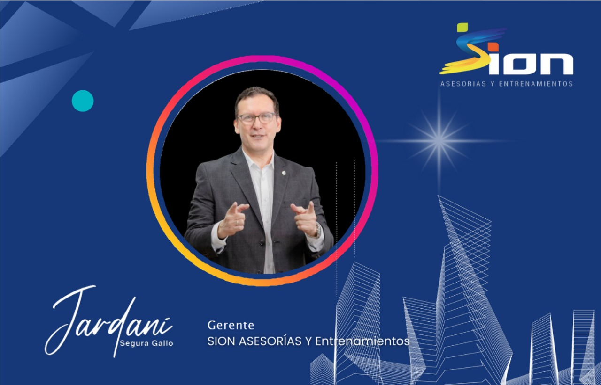

¿Quiénes somos?
Somos una organización que sirve a Dios mediante imparticiones, entrenamientos y asesorías, con el fin de que los hijos de Dios sean reconciliados con su propósito, edificados en los principios del sistema económico del Reino, y manifiesten a Cristo en la esfera laboral y empresarial.
Misión
Reconectar a los hijos de Dios con el propósito y diseño económico del Reino a través de un proceso de transformación mental y edificación espiritual.
Visión
Impactar la economía del Reino edificando pastores, empresarios y consejeros que fluyan con productividad, sabiduría y manifestación de Cristo en sus áreas de influencia.
